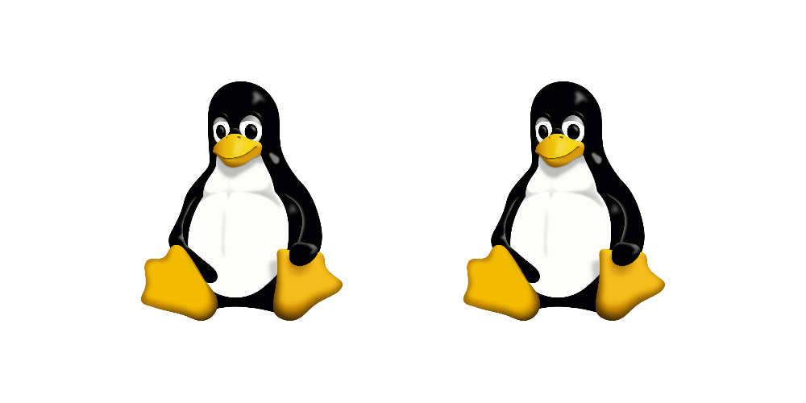
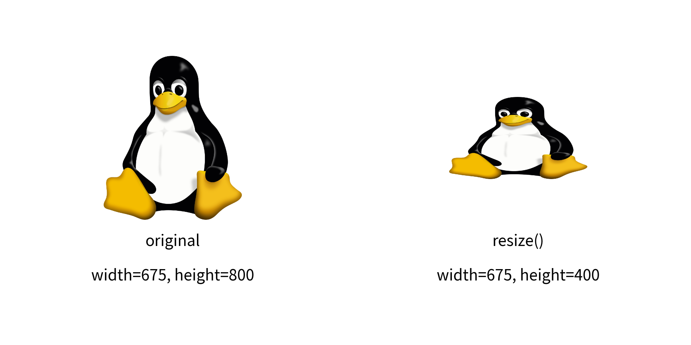
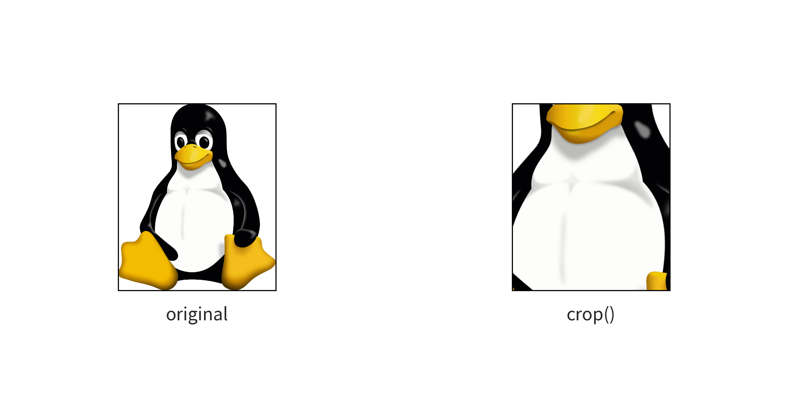
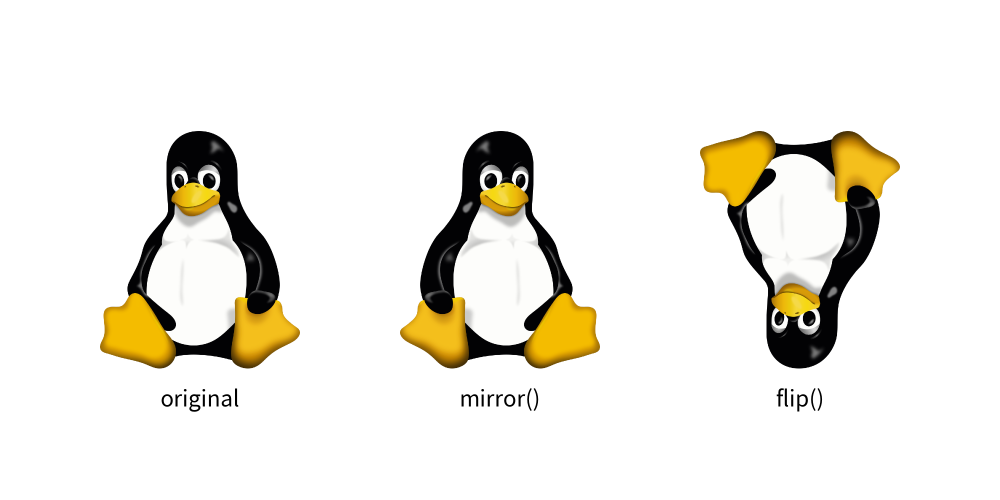
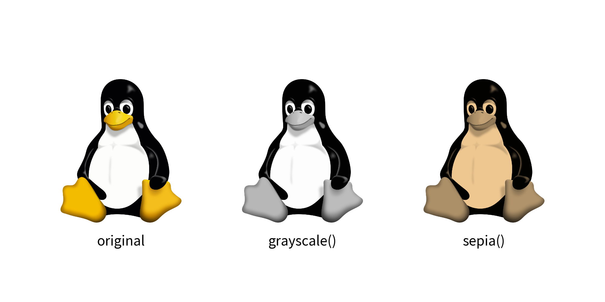
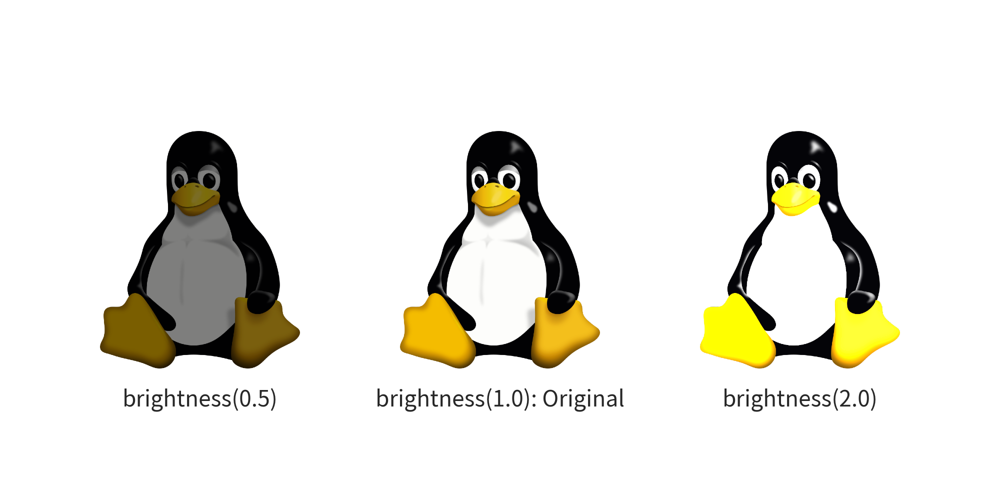
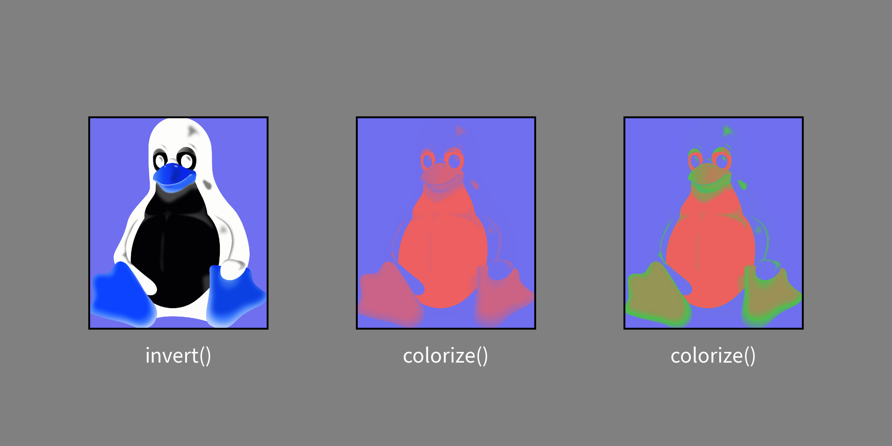
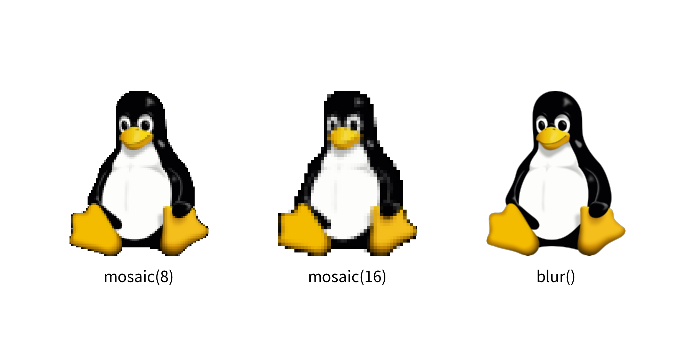

Dimage
The image() function draws an image from a file.
If you want to specify a file path and show it as is, providing a relative path is acceptable.
Dimage is an image data class in Drawlib.
It is useful in the following situations:
- Applying effects to images
- Caching (loading data in one place and using it in many places)
The image() function can take a Dimage object and draw the image.
Reusing Loaded Images
When loading an image from a file, creating a Dimage instance loads and stores the image data in memory as a variable.
You can store a Dimage object in a variable and pass it to multiple image() calls without re-loading the image from disk.
Here is an example:
from drawlib.canvas import config
from drawlib.images import Dimage, image
config(width=100, height=50)
im_linux = Dimage("../_assets/linux.png")
image((30, 25), 25, im_linux)
image((70, 25), 25, im_linux)
In this example, im_linux loads ../_assets/linux.png once into memory.
Passing im_linux to image() multiple times reuses the pre-loaded image efficiently.
Here is the output:

Not only can you reuse images loaded from files, but you can also reuse images you have modified with effects. If you repeatedly use some images, we recommend using this feature as well.
Things Controlled by image()
Dimage is a helper for the image() function.
Therefore, Dimage does not include features that are implemented in image().
These features are not included:
- Rotate: Controlled by the
angleoption - Add Border: Controlled by the
line_widthandline_colorattributes ofStyle
Save Dimage to File
Dimage can save its data to a file without using Drawlib's canvas.
The save() method performs this function.
It requires a mandatory argument, file.
While the file argument in Canvas's save() is optional, it is required for Dimage's save().
If you provide a relative path, the image file will be saved relative to the script's path. An absolute path will also work.
Get Image Pixel Size
You can get the original image size using the get_image_size() method.
It returns a tuple of width and height.
This method is helpful for determining the dimensions of the image before performing operations like resize() or trim()
Resizing and Changing Aspect
The resize() method in Dimage takes two arguments: width and height.
These dimensions refer to the original pixel size of the image data, not the size on Drawlib's canvas.
Before resizing, you can check the original width and height using the get_image_size() method.
If you want to maintain the aspect ratio of the original image, you should calculate either the new width or the new height while keeping the ratio between them.
If you want to change the aspect ratio, you need to calculate both the new width and height accordingly.
Here's an example of changing the aspect ratio where we halve the image height:
from drawlib.canvas import config
from drawlib.images import Dimage, image
from drawlib.text import text
config(width=100, height=50, dpi=200)
# original
original_image = Dimage("../_assets/linux.png")
image((25, 30), 20, original_image)
text((25, 15), "original")
width, height = original_image.get_image_size()
text((25, 10), f"width={width}, height={height}")
# resize
new_height = int(height / 2)
resized_image = original_image.resize(width, new_height)
image((75, 30), 20, resized_image)
text((75, 15), "resize()")
text((75, 10), f"width={width}, height={new_height}")
In this example, we retrieve the original image dimensions using get_image_size().
And then resize the image using resize().
We keep original width, but new height is half of original.
Finally, the resized image is drawn with image() function.
Here is the output:

Crop
If an image contains unnecessary parts, you can trim or crop it using the crop() method.
This method accepts the following arguments:
- x: Specifies the starting point from the left (0 to x pixels will be cropped).
- y: Specifies the starting point from the bottom (0 to y pixels will be cropped).
- width: Specifies the width of the cropped area starting from x.
- height: Specifies the height of the cropped area starting from y.
Here's an example that keeps the center 50% of the image:
from drawlib.canvas import config
from drawlib.images import Dimage, image
from drawlib.text import text
config(width=100, height=50, dpi=200)
# original
original_image = Dimage("../_assets/linux.png")
image((25, 25), 20, original_image, style={"line_width": 1})
text((25, 10), "original")
width, height = original_image.get_image_size()
# trimming
x_start = int(width / 4)
crop_width = int(width / 2)
y_start = int(height / 4)
crop_height = int(height / 2)
cropped_image = original_image.crop(x_start, y_start, crop_width, crop_height)
image((75, 25), 20, cropped_image, style={"line_width": 1})
text((75, 10), "crop()")
In this example, we calculate the cropping parameters to keep the center 50% of the image.
We then use the crop() method to apply the cropping operation to the Dimage object.
Finally, the cropped image can be used in drawing operations with image().
Here is the output:

Flip Horizontally and Vertically
You can easily flip an image using Dimage:
- Horizontal Flip: Use the
mirror()method. - Vertical Flip: Use the
flip()method.
Here's an example:
from drawlib.canvas import config
from drawlib.images import Dimage, image
from drawlib.text import text
config(width=100, height=50, dpi=200)
# original
original_image = Dimage("../_assets/linux.png")
image((20, 25), 20, original_image)
text((20, 10), "original")
# mirror
image((50, 25), 20, original_image.mirror())
text((50, 10), "mirror()")
# flip
image((80, 25), 20, original_image.flip())
text((80, 10), "flip()")
Here is the output:

Change color
Drawlib provides several functions to modify the color of images:
grayscale(): Converts the image to grayscalesepia(): Applies a sepia tone effect to the image
Here's an example:
from drawlib.images import Dimage
from drawlib.canvas import config, save
from drawlib.images import image
from drawlib.text import text
config(width=100, height=50, dpi=200)
# original
original_image = Dimage("../_assets/linux.png")
image((20, 25), 20, original_image)
text((20, 10), "original")
# grayscale
image((50, 25), 20, Dimage("../_assets/linux.png").grayscale())
text((50, 10), "grayscale()")
# sepia
image((80, 25), 20, original_image.sepia())
text((80, 10), "sepia()")
Here is the output.

brightness(): Adjusts the brightness of the image
A value of 0.0 makes the image completely dark, 1.0 keeps the original brightness, and values greater than 1.0 increase the brightness.
Here's an example:
from drawlib.canvas import config
from drawlib.images import Dimage, image
from drawlib.text import text
config(width=100, height=50, dpi=200)
image((20, 25), 20, Dimage("../_assets/linux.png").brightness(0.5))
text((20, 10), "brightness(0.5)")
image((50, 25), 20, Dimage("../_assets/linux.png").brightness(1.0))
text((50, 10), "brightness(1.0): Original")
image((80, 25), 20, Dimage("../_assets/linux.png").brightness(2.0))
text((80, 10), "brightness(2.0)")
Here is an output.

invert(): Reverses the RGB values of the imagecolorize(): Applies colors to a grayscale image. If the image is not grayscaled, it will be automatically grayscaled before colorize.
from drawlib.canvas import config
from drawlib.colors import Colors, ColorsDefault
from drawlib.images import Dimage, image
from drawlib.text import text
config(width=100, height=50, dpi=200, background_color=Colors.Gray)
# invert
image((20, 25), 20, Dimage("../_assets/linux.png").invert())
text((20, 10), "invert()", style="white")
# colorize
image(
(50, 25),
20,
Dimage("../_assets/linux.png").colorize(
from_black_to=ColorsDefault.Blue,
from_white_to=ColorsDefault.Red,
),
)
text((50, 10), "colorize()", style="white")
# colorize 3 colors
image(
(80, 25),
20,
Dimage("../_assets/linux.png").colorize(
from_black_to=ColorsDefault.Blue,
from_white_to=ColorsDefault.Red,
from_mid_to=ColorsDefault.Green,
),
)
text((80, 10), "colorize()", style="white")
Here is the output.

Apply Effects
You can apply various effects to images using Drawlib:
mosaic(): Applies a mosaic effect to the image. You can specify the size of mosaic blocks with the optionalblock_sizeargument. Default is 8.blur(): Applies a blur effect to the image
Here's an example:
from drawlib.canvas import config
from drawlib.images import Dimage, image
from drawlib.text import text
config(width=100, height=50, dpi=200)
image((20, 25), 20, Dimage("../_assets/linux.png").mosaic(8))
text((20, 10), "mosaic(8)")
image((50, 25), 20, Dimage("../_assets/linux.png").mosaic(16))
text((50, 10), "mosaic(16)")
image((80, 25), 20, Dimage("../_assets/linux.png").blur())
text((80, 10), "blur()")
Here is the output.

[!TIP] To execute dynamic Drawlib Python code in an isolated subprocess and capture the rendered canvas output directly as a
Dimage(for nested diagram composition, applying raster filters, or sandboxed previews), see Rendering from Code (get_dimage_from_code).
© 2026 drawlib by Yuichi Ito. Released under the Apache 2.0 License.